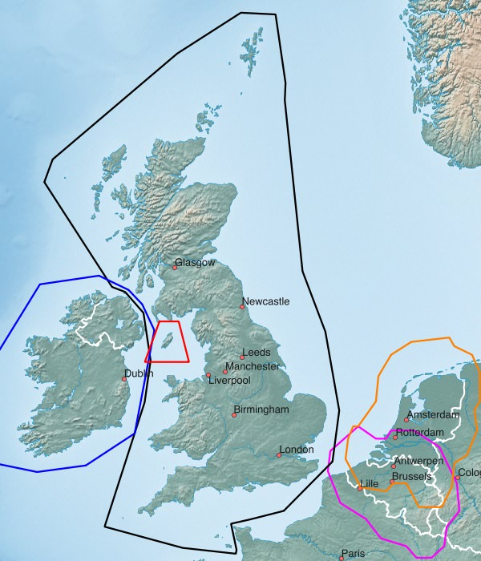

Western Europe - available Maps:
- Northern France
- Eastern France
- Central France
- Western France
- Southern France
- Andorra
- Britain (island)
- Isle of Man
- Ireland (island)
- Netherlands
- Belgium
Tips concerning download:
- click on the Netbook Icon in the PC browser: the map will be downloaded onto your personal computer
- click on the Locus Map Icon in the Android browser: map+design will be downloaded into Locus Map
- click on the OruxMaps Icon in the Android browser: the map will be downloaded into OruxMaps
Northern, Eastern, Central, Western, Southern France, Andorra:

| Northern France FRA+NORTH 0.5 GB |
|||
| Eastern France FRA+EAST 0.7 GB |
|||
| Central France FRA+CENTRE 0.6 GB |
|||
| Western France FRA+WEST 0.5 GB |
|||
| Southern France FRA+SOUTH 0.6 GB |
|||
| Andorra AND 10 MB |
Britain, Isle of Man, Ireland, Netherlands, Belgium:

| Britain (island) GBR 0.7 GB |
|||
| Isle of Man IMN 10 MB |
|||
| Ireland (island) IRL 0.2 GB |
|||
| Netherlands NLD+ 0.9 GB |
|||
| Belgium BEL+ 0.7 GB |